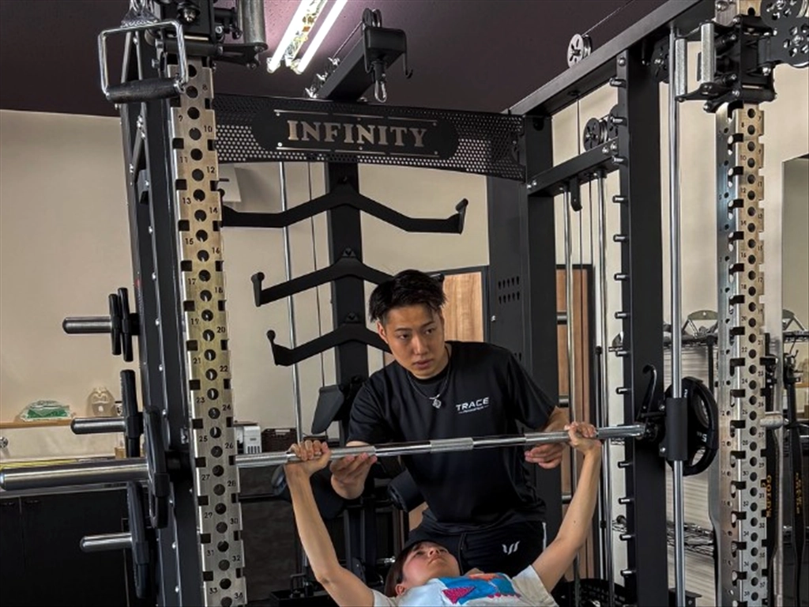

佐賀市でダイエットにパーソナルジムを使うメリット
ダイエットでは、ただ運動量を増やせばいいとは限りません。現在の体力や運動経験、生活リズムによって、続けやすい方法は変わります。
パーソナルジムでは、フォームや負荷を確認しながらマンツーマンで進められるため、運動初心者でも自分に合った内容から始めやすくなります。また、一人では判断しにくいトレーニング量や食事について相談できることも特徴です。
ダイエット目的なら週何回通えばいい？

週1回からでも運動習慣を作るきっかけになります。よりトレーニング量を確保したい場合は週2回も選択肢ですが、大切なのは数週間だけ頑張ることではなく、生活の中で続けられるペースを作ることです。
頻度について詳しくは「パーソナルジムは週何回通えば痩せる？」で解説しています。
食事はどこまで変える？
ダイエットでは食事も大切ですが、極端に食べる量を減らしたり、特定の食品を完全に避けたりすると続けにくくなることがあります。
まずは3食のバランス、間食や飲み物、外食の頻度など、今の生活で変えやすいところから見直します。TRACEでも、無理な食事制限ではなく、生活に合わせて続けやすい食事改善をサポートしています。
食事については「パーソナルジムで食事制限は必要？」も参考にしてください。
どのくらいの期間を見ればいい？
体重や見た目の変化には個人差があります。短期間の数字だけを追うより、トレーニングと食事を継続しながら身体の変化を確認していくことが大切です。
最初は2〜3ヶ月程度を一つの区切りとして振り返り、その後の目標や通い方を調整する方法もあります。期間の考え方は「パーソナルジムは何ヶ月で痩せる？」で詳しく紹介しています。
ダイエットは「続けられる環境」で選ぶ
トレーニング内容だけでなく、通いやすさや予約の取りやすさ、トレーナーとの相性も継続に関わります。仕事帰りや休日に無理なく通える場所か、自分の目的について相談しやすいかを体験時に確認しておきましょう。
料金についても、短期間の安さだけではなく、無理なく続けられる金額かを見ることが大切です。「佐賀市のパーソナルジムの料金はいくら？」でも料金の見方を紹介しています。
佐賀市でダイエットを始めるならTRACEへ
パーソナルジム TRACEは、佐賀市神野西、佐賀駅から車で約2分の完全個室パーソナルジムです。運動初心者の方も、周りを気にせずマンツーマンでトレーニングできます。
ダイエットやボディメイクでは、一時的に頑張る方法ではなく、生活の中で続けられる身体づくりを大切にしています。初回体験では、目標や運動経験を確認したうえで、無理のない内容からトレーニングを行います。
関連：佐賀市のジム選び ／ 女性のジム選び ／ 週何回通えばいい？ ／ 何ヶ月で痩せる？ ／ 食事制限は必要？ ／ 初回体験を見る